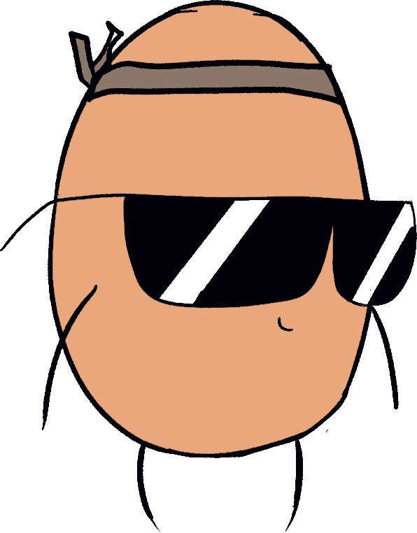

Le Chalutier est un studio de jeu vidéo tout récent de notre création. Nous sommes actuellement en train de développer notre premier jeu, Worcestershire Fish, dont le personnage principal est actuellement affiché sur la droite. Il s'agira d'un jeu de plateforme 2D de type Metroidvania dans un style de dessin enfantin.
Plus de choses à venir !